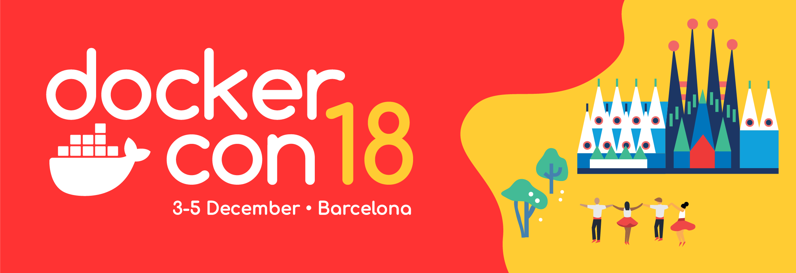
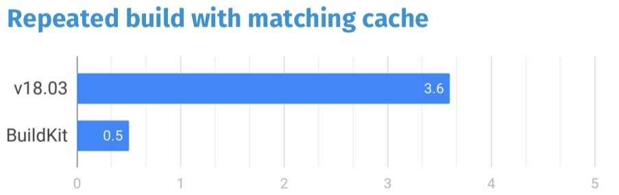
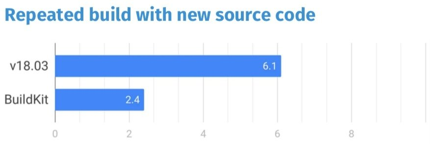
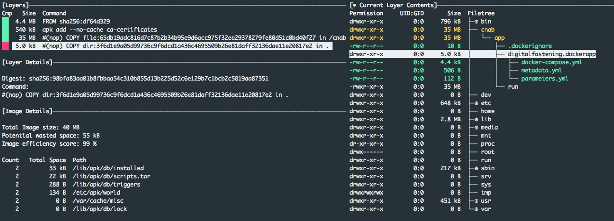

3 dicembre
252737 - Workshop: Container Storage Concepts and How to Use Them
4 dicembre
- 256237 - General Session: Day 1
- 250590 - How To Build Your Containerization Strategy
- 237268 - Docker Containers and Databases
- 252738 - Workshop: Migrating Java Applications to Docker Containers
- 244187 - Building Infrastructure for the Next Generation of Successful African Ventures
- 244022 - App-in-a-Box with Docker Application Packages
- 262912 - Dockerfile Best Practices
5 dicembre
- 261219 - General Session: Day 2
- 250876 - Tips and Tricks of the Docker Captains
- 250870 - From Monolith to Microservices
- 252706 - Provisioning and Managing Storage for Docker Containers
- 251464 - Continuous Delivery with Docker Containers and Java: The Good, the Bad, and the Ugly
Contents
- DockerApp
- BUILDKIT
- Cnab.io
- Multistage
- Thin image
- Dive
- Security docker container
- jdk params,memory,tips in a container JDK11
- building maven security check, tree shake
- New features: mount, cache, secret, ssh forwarding
Thin image
FROM debian
COPY . /app
RUN apt-get update
RUN apt-get -y install openjdk-8-jdk ssh emacs
CMD ["java", "-jar", "/app/target/app.jar"]
Thin image
FROM debian
COPY . /app
RUN apt-get update
RUN apt-get -y install openjdk-8-jdk ssh emacs vim
CMD ["java", "-jar", "/app/target/app.jar"]
Thin image
FROM debian
COPY . /app
RUN apt-get update
RUN apt-get -y install openjdk-8-jdk ssh vim
COPY . /app
CMD ["java", "-jar", "/app/target/app.jar"]Thin image
FROM debian
RUN apt-get update
RUN apt-get -y install openjdk-8-jdk ssh vim
COPY . /app
CMD ["java", "-jar", "/app/target/app.jar"]Thin image
FROM debian
RUN apt-get update
RUN apt-get -y install openjdk-8-jdk ssh vim
COPY . /app
COPY target/app.jar /app
CMD ["java", "-jar", "/app/target/app.jar"]COPY vs ADD
Thin image
FROM debian
RUN apt-get update
RUN apt-get -y install openjdk-8-jdk ssh vim
RUN apt-get update && apt-get -y install \
openjdk-8-jdk ssh vim
COPY . /app
COPY target/app.jar /app
CMD ["java", "-jar", "/app/app.jar"]Thin image
FROM debian
RUN apt-get update && apt-get -y install \
openjdk-8-jdk ssh vim
COPY . /app
COPY target/app.jar /app
CMD ["java", "-jar", "/app/app.jar"]Thin image
FROM debian
RUN apt-get update && apt-get -y install \
openjdk-8-jdk ssh vim
COPY . /app
COPY target/app.jar /app
CMD ["java", "-jar", "/app/app.jar"]Thin image
FROM debian
RUN apt-get update && apt-get -y install \
openjdk-8-jdk
COPY . /app
COPY target/app.jar /app
CMD ["java", "-jar", "/app/app.jar"]Thin image
FROM debian
RUN apt-get update && apt-get -y install --no-install-recommends\
openjdk-8-jdk
COPY . /app
COPY target/app.jar /app
CMD ["java", "-jar", "/app/app.jar"]Thin image
FROM debian
RUN apt-get update && apt-get -y install --no-install-recommends\
openjdk-8-jdk \
&& rm -rf /var/lib/apt/lists/*
COPY . /app
COPY target/app.jar /app
CMD ["java", "-jar", "/app/app.jar"]Thin image
FROM debian
RUN apt-get update && apt-get -y install --no-install-recommends\
openjdk-8-jdk \
&& rm -rf /var/lib/apt/lists/*
COPY . /app
COPY target/app.jar /app
CMD ["java", "-jar", "/app/app.jar"]Thin image
FROM debian
RUN apt-get update && \
apt-get -y install --no-install-recommends \
openjdk-8-jdk\
&& rm -rf /var/lib/apt/lists/*
FROM openjdk
COPY target/app.jar /app
CMD ["java", "-jar", "/app/app.jar"]Thin image
FROM openjdk:8-jre-slim
COPY target/app.jar /app
CMD ["java", "-jar", "/app/app.jar"]Thin image
FROM openjdk:8-jre-alpine
COPY target/app.jar /app
CMD ["java", "-jar", "/app/app.jar"]Thin image
| REPOSITORY | TAG | SIZE |
|---|---|---|
| openjdk | 8 | 624MB |
| openjdk | 8-jre | 443MB |
| openjdk | 8-jre-slim | 204MB |
| openjdk | 8-jre-alpine | 83MB |
Build from source in a consistent environment...Why?
- Build environment is described in the Dockerfile
- Correct versions of build tools installed
- Prevent inconsistencies between environments
- There may be system dependencies
- The "source of truth" is the source code not the build artifact
Build from source
FROM maven:3.6-jdk-8-alpine
COPY pom.xml /app/
COPY src /app/src
RUN cd /app && mvn -e -B package
CMD ["java", "-jar", "/app/app.jar"]
Build from source
FROM maven:3.6-jdk-8-alpine
WORKDIR /app
COPY pom.xml /app/.
COPY src /app./src
RUN cd /app &&mvn -e -B package
CMD ["java", "-jar", "/app/app.jar"]
Build from source
FROM maven:3.6-jdk-8-alpine
WORKDIR /app
COPY pom.xml .
RUN mvn -e -B dependency:resolve
COPY src ./src
RUN mvn -e -B package
CMD ["java", "-jar", "/app/app.jar"]
Stability: Docker and Java
- Watch for JVM cgroup/taskset awareness (with JDK <= 8u131)
- getAvailableProcessors() may incorrectly report the number of cpus in Docker (JDK-8140793)
- Runtime.availableProcessors() ignores Linux taskset command (JDK-6515172)
- GC threads, default fork/join thread pool sizes (and others) is based from host CPU count
- Set container memory appropriately
- JVM requirements = Heap size (Xmx) + Metaspace + JVM overhead
- Account for native thread requirements e.g. thread stack size (Xss)
- Entropy
- Host entropy can soon be exhausted by crypto operations and /dev/random blocks
- -Djava.security.egd=file:/dev/./urandom (https://www.2uo.de/myths-about-urandom/) (JDK-6202721)
Since JDK8 this has been improving with every release
- JDK-8170888 Use cgroup memory limit when determining heap size JDK 8,9
- JDK-8146115 Improve container detection and resource configuration usage JDK 10
- JDK-8179498 attach in linux should be relative to /proc/pid/root and namespace aware
- JDK-8186248 Allow more flexibility in selecting Heap % of available RAM JDK 10
- JDK-8193710 jcmd -l and jps commands do not list JVMs in Docker containers JDK 11
- JDK-8203357 Container Metrics JDK 11
MultiStage
From Docker 17.05
Keep the image size down
Dockerfile.build vs Dockerfile
Dockerfile.build
FROM maven:3.6.0-jdk-11-slim
WORKDIR /root
COPY settings.xml /root/.m2/
COPY ./* ./
RUN mvn -e -B packageDockerfile
FROM openjdk:8-jre-alpine
COPY ./df-api-gateway-0.0.1-SNAPSHOT.jar /usr/src/apigateway/
WORKDIR /usr/src/apigateway
EXPOSE 8080
CMD ["java", "-Djava.security.egd=file:/dev/./urandom", "-Dserver.port=8080", "-jar", "df-api-gateway-0.0.1-SNAPSHOT.jar"]build.sh
#!/bin/sh
echo Building digitalfasteningBuild
docker build --build-arg https_proxy=$https_proxy --build-arg http_proxy=$http_proxy \
-t digitalfastening/df-api-gateway:build . -f Dockerfile.build
docker container create --name extract digitalfastening/df-api-gateway:build
docker container cp extract:/root/df-api-gateway/target/df-api-gateway-0.0.1-SNAPSHOT.jar .
docker container rm -f extract
echo Building digitalfasteningRun
docker build --no-cache -t digitalfastening/df-api-gateway:run .
rm ./df-api-gateway-0.0.1-SNAPSHOT.jarMultistage
ARG openjdkversion=8-jre-alpine
FROM maven:3.6.0-jdk-11-slim as builder
WORKDIR /root
COPY settings.xml /root/.m2/
COPY ./* ./
RUN mvn -e -B package
FROM openjdk:$openjdkversion as df-api-gateway
COPY --from=builder /root/df-api-gateway/target/df-api-gateway-0.0.1-SNAPSHOT.jar /usr/src/apigateway/
WORKDIR /usr/src/apigateway
EXPOSE 8080
CMD ["java", "-Djava.security.egd=file:/dev/./urandom", "-Dserver.port=8080", "-jar", "df-api-gateway-0.0.1-SNAPSHOT.jar"]COPY --from=nginx:latest /etc/nginx/nginx.conf /nginx.confARG openjdkversion=8-jre-alpine
FROM maven:3.6.0-jdk-11-slim as builder
WORKDIR /root
COPY settings.xml /root/.m2/
COPY ./* ./
RUN mvn -e -B package
FROM openjdk:$openjdkversion as df-api-gateway
COPY --from=builder /root/df-api-gateway/target/df-api-gateway-0.0.1-SNAPSHOT.jar /usr/src/apigateway/
WORKDIR /usr/src/apigateway
EXPOSE 8080
CMD ["java", "-Djava.security.egd=file:/dev/./urandom", "-Dserver.port=8080", "-jar", "df-api-gateway-0.0.1-SNAPSHOT.jar"]
FROM openjdk:$openjdkversion as df-data-collector
COPY --from=builder /root/df-data-collector/target/df-data-collector-0.0.1-SNAPSHOT.jar /usr/src/dfdatacollector/
WORKDIR /usr/src/dfdatacollector
EXPOSE 8210
CMD ["java", "-Djava.security.egd=file:/dev/./urandom", "-Dserver.port=8210", "-jar", "df-data-collector-0.0.1-SNAPSHOT.jar"]
FROM openjdk:$openjdkversion as df-data-raw
COPY --from=builder ./target/df-data-raw-0.0.1-SNAPSHOT.jar /usr/src/dfdataraw/
WORKDIR /usr/src/dfdataraw
EXPOSE 8240
CMD ["java", "-Djava.security.egd=file:/dev/./urandom", "-Dserver.port=8240", "-jar", "df-data-raw-0.0.1-SNAPSHOT.jar"]
FROM openjdk:$openjdkversion as df-data-reporter
COPY --from=builder /root/df-data-reporter/target/df-data-reporter-0.0.1-SNAPSHOT.jar /usr/src/dfdatareporter/
WORKDIR /usr/src/dfdatareporter
EXPOSE 8239
CMD ["java", "-Djava.security.egd=file:/dev/./urandom", "-Dserver.port=8239", "-jar", "df-data-reporter-0.0.1-SNAPSHOT.jar"]
FROM openjdk:$openjdkversion as df-direct-reporting-system-service
COPY --from=builder /root/df-direct-reporting-system-service/target/df-direct-reporting-system-service-0.0.1-SNAPSHOT.jar /usr/src/df-direct-reporting-system-service/
WORKDIR /usr/src/uiserver
EXPOSE 8241
CMD ["java", "-Djava.security.egd=file:/dev/./urandom", "-Dserver.port=8241", "-jar", "df-direct-reporting-system-service-0.0.1-SNAPSHOT.jar"]
FROM openjdk:$openjdkversion as df-naming-service
COPY --from=builder /root/df-naming-service/target/df-naming-service-0.0.1-SNAPSHOT.jar /usr/src/naming/
WORKDIR /usr/src/naming
EXPOSE 8761
CMD ["java", "-Djava.security.egd=file:/dev/./urandom", "-Dserver.port=8761", "-jar", "df-naming-service-0.0.1-SNAPSHOT.jar"]
FROM openjdk:$openjdkversion as df-ui-launchpad
COPY --from=builder /root/df-ui-launchpad/target/df-ui-launchpad-0.0.1-SNAPSHOT.jar /usr/src/uilaunchpad/
WORKDIR /usr/src/uilaunchpad
EXPOSE 80
CMD ["java", "-Djava.security.egd=file:/dev/./urandom", "-Dserver.port=80", "-jar", "df-ui-launchpadk-0.0.1-SNAPSHOT.jar"]
FROM openjdk:$openjdkversion as df-ui-server
COPY --from=builder /root/df-ui-server/target/df-ui-server-0.0.1-SNAPSHOT.jar /usr/src/uiserver/
WORKDIR /usr/src/uiserver
EXPOSE 80
CMD ["java", "-Djava.security.egd=file:/dev/./urandom", "-Dserver.port=80", "-jar", "df-ui-server-0.0.1-SNAPSHOT.jar"]
docker build --target=XXXXX .Dive (https://github.com/wagoodman/dive)

New features 18.09
-
BUILDKIT
-
mount
-
cache
-
secret
-
ssh forwarding
-
BUILDKIT
BuildKit is a toolkit for converting source code to build artifacts in an efficient, expressive and repeatable manner.
Buildkit is a proposal to separate out docker build experience into a separate project, allowing different users to collaborate on the underlying technology and reuse and customize it in different ways.
One of the main design goals of buildkit is to separate frontend and backend concerns during a build process. A frontend is something designed for the users to describe their build definition. Backend solves the problem of finding a most efficient way to solve a common low-level description of the build operations, that has been prepared for them by the frontends.
The purpose of buildkit is not to be an arbitrary task runner. Instead, buildkit solves the problem of converting source code to an artifact in a self-contained, portable, reproducible, and most efficient way. Invoking builder should be traceable to immutable sources and invoking it shouldn't have any side-effects. Buildkit will support intelligent caching of artifacts of previous invocations so it can be efficiently used in a developer workflow.
Buildkit is meant to be used as a long-running service. It is optimized for parallel execution of complex projects and building multiple projects at the same time.
Benchmarks
|  |
7.2x faster |
|  |
2.5x faster |
Enable Buildkit
|
/etc/docker/daemon.json |
Environment |
Secret
Secret example
# syntax=docker/dockerfile:experimental
FROM alpine
# install ssh client and git
RUN apk add --no-cache openssh-client git
# clone repo
RUN --mount=type=secret,id=mysecretrepo,required /bin/sh /run/secrets/mysecretrepodocker build -f DockerfileSecret --secret id=mysecretrepo,src=script.sh . SSH forwarding
# syntax=docker/dockerfile:experimental
FROM alpine
# install ssh client and git
RUN apk add --no-cache openssh-client git
# download public key for github.com
RUN mkdir -p -m 0600 ~/.ssh && ssh-keyscan github.com >> ~/.ssh/known_hosts
# clone our private repository
RUN --mount=type=ssh git clone git@github.com:myorg/myproject.git myprojectdocker build --ssh default .
- - mount
# syntax=docker/dockerfile:1.0-experimental
ARG openjdkversion=8-jre-alpine
FROM maven:3.6.0-jdk-11-slim as builder
WORKDIR /app
COPY settings.xml /root/.m2/
COPY ./* ./
RUN --mount=target=. --mount=type=cache,target=/root/.m2 \
mvn -DoutputDirectory=/ -DbuildDirectory=/ -e package
FROM openjdk:$openjdkversion as df-data-reporter
COPY --from=builder /app/df-data-reporter/target/df-data-reporter-0.0.1-SNAPSHOT.jar \
/usr/src/dfdatareporter/
WORKDIR /usr/src/dfdatareporter
EXPOSE 8239
CMD ["java", "-Djava.security.egd=file:/dev/./urandom", "-Dserver.port=8239", "-jar", "df-data-reporter-0.0.1-SNAPSHOT.jar"]docker build --target=df-data-reporter .DockerApp
Docker Application Packages
- You have several environments where you want to deploy the application, with small configuration differences
- You have lots of similar applications
Nginx
version: '3.6'
services:
hello:
image: nginx:1.15.10
command: ["-text", "Ciao"]
ports:
- 80:80
networks:
- backend Nginx profiled
version: '3.6'
services:
hello:
image: nginx:1.15.10
command: ["-text", "${text}"]
ports:
- ${port}:80
networks:
- backend DockerApp file
version: 0.1.0
name: hello
description: sample app for DockerCon
maintainers:
- name: paspaola
email: pasquale.paola@eng.it
---
version: '3.6'
services:
hello:
image: nginx:1.15.10
command: ["-text", "${text}"]
ports:
- ${port}:80
---
port: 8080
text: "hello DockerCon"
docker-app render --set port=8181 --set text="Ciao"version: 0.1.0
name: digitalfastening
description: Docker compose for digital fastening project
namespace: azureeslnapoliregistry.azurecr.io
maintainers:
- name: Pasquale Paola
email: pasquale.paola@eng.it
---
version: '3.7'
services:
df-admin:
image: azureeslnapoliregistry.azurecr.io/df-admin
command: ["java", "-Djava.security.egd=file:/dev/./urandom", "-Dserver.port=7981", "-jar", "df-ui-admin-0.0.1-SNAPSHOT.jar"]
build:
context: df-ui-admin
ports:
- 7981:7981
networks:
- digital-fastnening
df-direct-reporting-system:
image: azureeslnapoliregistry.azurecr.io/df-direct-reporting-system-service
command: ["java", "-Djava.security.egd=file:/dev/./urandom", "-Dspring.profiles.active=${spring.profile}", "-Dserver.port=8100","-Dserver.address=", "-jar", "df-direct-reporting-system-service-0.0.1-SNAPSHOT.jar"]
build:
context: df-direct-reporting-system-service
ports:
- 8241:8241
depends_on:
- df-naming-service
- df-api-gateway
networks:
- digital-fastnening
df-data-collector:
image: azureeslnapoliregistry.azurecr.io/df-data-collector
command: ["java", "-Djava.security.egd=file:/dev/./urandom", "-Dspring.profiles.active=${spring.profile}", "-jar", "df-data-collector-0.0.1-SNAPSHOT.jar"]
build:
context: df-data-collector
depends_on:
- df-data-reporter
- redis
- df-naming-service
- df-api-gateway
networks:
- digital-fastnening
df-data-reporter:
image: azureeslnapoliregistry.azurecr.io/df-data-reporter
command: ["java", "-Djava.security.egd=file:/dev/./urandom", "-Dspring.profiles.active=${spring.profile}", "-Dserver.port=8239", "-jar", "df-data-reporter-0.0.1-SNAPSHOT.jar"]
build:
context: df-data-reporter
ports:
- 8239:8239
depends_on:
- redis
- postgresql
- df-naming-service
- df-api-gateway
networks:
- digital-fastnening
df-data-raw:
image: azureeslnapoliregistry.azurecr.io/df-data-raw
command: ["java", "-Djava.security.egd=file:/dev/./urandom", "-Dspring.profiles.active=${spring.profile}", "-Dserver.port=8240", "-jar", "df-data-raw-0.0.1-SNAPSHOT.jar"]
build:
context: df-data-raw
ports:
- 8240:8240
depends_on:
- mongodb
- redis
- df-naming-service
- df-api-gateway
networks:
- digital-fastnening
df-ui-server:
image: azureeslnapoliregistry.azurecr.io/df-ui-server
command: ["java", "-Djava.security.egd=file:/dev/./urandom", "-Dserver.port=80","-Dserver.address=", "-jar", "df-ui-server-0.0.1-SNAPSHOT.jar"]
build:
context: df-ui-server
depends_on:
- redis
- df-naming-service
- df-api-gateway
- df-ui-launchpad
ports:
- 8081:80
networks:
- digital-fastnening
df-ui-launchpad:
image: azureeslnapoliregistry.azurecr.io/df-ui-launchpad
command: ["java", "-Djava.security.egd=file:/dev/./urandom", "-Dserver.port=80", "-jar", "df-ui-launchpad-0.0.1-SNAPSHOT.jar"]
build:
context: df-ui-launchpad
depends_on:
- redis
- df-naming-service
- df-api-gateway
ports:
- 8082:80
networks:
- digital-fastnening
df-api-gateway:
image: azureeslnapoliregistry.azurecr.io/df-api-gateway
command: ["java", "-Djava.security.egd=file:/dev/./urandom", "-Dserver.port=8080", "-jar", "df-api-gateway-0.0.1-SNAPSHOT.jar"]
build:
context: df-api-gateway
ports:
- 8080:8080
depends_on:
- redis
- df-naming-service
networks:
- digital-fastnening
df-naming-service:
image: azureeslnapoliregistry.azurecr.io/df-naming-service
command: ["java", "-Djava.security.egd=file:/dev/./urandom", "-Dserver.port=8761", "-jar", "df-naming-service-0.0.1-SNAPSHOT.jar"]
build:
context: df-naming-service
ports:
- 8761:8761
networks:
- digital-fastnening
mongodb:
image: azureeslnapoliregistry.azurecr.io/mongodb
build:
context: docker-additional-services/mongodb
ports:
- 27017:27017
networks:
- digital-fastnening
redis:
image: redis:5.0.3-alpine
ports:
- 6379:6379
networks:
- digital-fastnening
postgresql:
image: azureeslnapoliregistry.azurecr.io/postgresql
build:
context: docker-additional-services/postgresql
ports:
- 5432:5432
networks:
- digital-fastnening
networks:
digital-fastnening:
---
{
spring.profile: development
}
docker-app render | docker-compose -f - up --build
Cnab.io
Cloud Native Application Bundles (CNAB) are a package format specification that describes a technology for bundling, installing, and managing distributed applications, that are by design, cloud agnostic.
Cnab.io
- It is not a platform-specific tool
- It uses containers for encapsulating installation logic
- It can bundle applications targeting environments:
- IaaS (like OpenStack or Azure)
- Container orchestrators (like Kubernetes or Nomad)
- Container runtimes (like local Docker or ACI)
- Cloud platform services (like object storage or Database as a Service)
bundle.json
- Information about the bundle, such as name, bundle version, description, and keywords
- Information about locating and running the invocation image (the installer program)
- A list of user-overridable parameters that this package recognizes
- The list of executable images that this bundle will install
- A list of credential paths or environment variables that this bundle requires to execute
bundle.json
{
"name": "azureeslnapoliregistry.azurecr.io/digitalfastening",
"version": "0.1.0",
"description": "Docker compose for digital fastening project",
"maintainers": [
{
"name": "Pasquale Paola",
"email": "pasquale.paola@eng.it",
"url": ""
}
],
"invocationImages": [
{
"imageType": "docker",
"image": "azureeslnapoliregistry.azurecr.io/digitalfastening:0.1.0-invoc"
}
],
"images": null,
"actions": {
"inspect": {
"Modifies": false
}
},
"parameters": {
"docker.kubernetes-namespace": {
"type": "string",
"defaultValue": "",
"required": false,
"metadata": {
"description": "Namespace in which to deploy"
},
"destination": {
"path": "",
"env": "DOCKER_KUBERNETES_NAMESPACE"
}
},
"docker.orchestrator": {
"type": "string",
"defaultValue": "",
"allowedValues": [
"",
"swarm",
"kubernetes"
],
"required": false,
"metadata": {
"description": "Orchestrator on which to deploy"
},
"destination": {
"path": "",
"env": "DOCKER_STACK_ORCHESTRATOR"
}
},
"spring.profile": {
"type": "string",
"defaultValue": "development",
"required": false,
"metadata": {},
"destination": {
"path": "",
"env": "docker_param1"
}
}
},
"credentials": {
"docker.context": {
"path": "/cnab/app/context.dockercontext",
"env": ""
}
}
}
CNAB structure
/cnab/app/run
#!/bin/sh
action=$CNAB_ACTION
name=$CNAB_INSTALLATION_NAME
case $action in
install)
echo "Install action"
;;
uninstall)
echo "uninstall action"
;;
upgrade)
echo "Upgrade action"
;;
*)
echo "No action for $action"
;;
esac
echo "Action $action complete for $name"
Dive on CNAB image
CNAB tools
- duffle
- duffle-bag
- porter